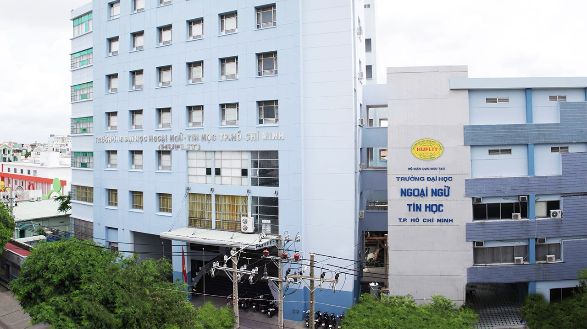

Các ngành đào tạo

Tại Quyết định số 1757/QĐ-TTg ngày 15-10-2015 của Thủ tướng Chính phủ cho phép chuyển đổi loại hình Trường ĐH Ngoại ngữ - Tin học TP.Hồ Chí Minh (HUFLIT) từ loại hình trường ĐH dân lập sang loại hình trường ĐH tư thục.
Gần 28 năm qua, bằng sự nỗ lực của tập thể sư phạm nhà trường, HUFLIT đã trở thành trường ĐH ngoài công lập được xã hội đánh giá cao về chất lượng đào tạo. Trường đã thiết lập nhiều mối quan hệ quốc tế với các trường ĐH trong khu vực và thế giới. Bên cạnh đó, trường đã đóng góp tích cực, hiệu quả vào sự nghiệp xã hội hóa giáo dục, công cuộc xây dựng và phát triển kinh tế - văn hóa đất nước. Với 2 công cụ đào tạo chiến lược là Ngoại ngữ và Tin học, trải qua 28 năm phát triển, đến nay trường đã có 8 khoa cùng 12 chương trình đào tạo. Thế mạnh của HUFLIT là giảng dạy các môn chuyên ngành bằng ngoại ngữ.
Trường cũng đã đạt chuẩn kiểm định chất lượng về cơ sở giáo dục. HUFLIT cũng là trường có thế mạnh về quan hệ quốc tế với các trường nổi tiếng trên thế giới thuộc các nước Canada, Hàn Quốc, Nhật Bản, New Zealand, Mỹ, Úc.
Triết lý giáo dục của HUFLIT là mang lại cho người học kiến thức để có thể mưu cầu hạnh phúc và tự do dựa trên nền tảng đạo đức và trí tuệ.
Sứ mạng của HUFLIT là đào tạo những sinh viên có khả năng học tập suốt đời để trở thành công dân thích nghi và đóng góp tích cực cho xã hội luôn thay đổi, có ý thức phát triển bản thân, đặc biệt là ngoại ngữ và tin học, thông qua các trải nghiệm thực tế.
Hãy đến với HUFLIT để tương lai rộng mở.
Giới thiệu tổng quan
Trường ĐH Dân lập Ngoại ngữ - Tin học TP.Hồ Chí Minh được thành lập ngày 26-10-1994 theo Quyết định số 616/TTg của Thủ tướng Chính phủ. Tiền thân là Trường Ngoại ngữ và Tin học Sài Gòn (1992).Tại Quyết định số 1757/QĐ-TTg ngày 15-10-2015 của Thủ tướng Chính phủ cho phép chuyển đổi loại hình Trường ĐH Ngoại ngữ - Tin học TP.Hồ Chí Minh (HUFLIT) từ loại hình trường ĐH dân lập sang loại hình trường ĐH tư thục.
Gần 28 năm qua, bằng sự nỗ lực của tập thể sư phạm nhà trường, HUFLIT đã trở thành trường ĐH ngoài công lập được xã hội đánh giá cao về chất lượng đào tạo. Trường đã thiết lập nhiều mối quan hệ quốc tế với các trường ĐH trong khu vực và thế giới. Bên cạnh đó, trường đã đóng góp tích cực, hiệu quả vào sự nghiệp xã hội hóa giáo dục, công cuộc xây dựng và phát triển kinh tế - văn hóa đất nước. Với 2 công cụ đào tạo chiến lược là Ngoại ngữ và Tin học, trải qua 28 năm phát triển, đến nay trường đã có 8 khoa cùng 12 chương trình đào tạo. Thế mạnh của HUFLIT là giảng dạy các môn chuyên ngành bằng ngoại ngữ.
Trường cũng đã đạt chuẩn kiểm định chất lượng về cơ sở giáo dục. HUFLIT cũng là trường có thế mạnh về quan hệ quốc tế với các trường nổi tiếng trên thế giới thuộc các nước Canada, Hàn Quốc, Nhật Bản, New Zealand, Mỹ, Úc.
Triết lý giáo dục của HUFLIT là mang lại cho người học kiến thức để có thể mưu cầu hạnh phúc và tự do dựa trên nền tảng đạo đức và trí tuệ.
Sứ mạng của HUFLIT là đào tạo những sinh viên có khả năng học tập suốt đời để trở thành công dân thích nghi và đóng góp tích cực cho xã hội luôn thay đổi, có ý thức phát triển bản thân, đặc biệt là ngoại ngữ và tin học, thông qua các trải nghiệm thực tế.
Hãy đến với HUFLIT để tương lai rộng mở.
Tuyển sinh cao học